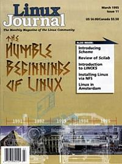

Shutdown Archive web server
Search:
Linux Journal
Issue #11/March 1995

Features
The Humble Beginnings of Linux
by Randolph Bentson
A reflection of the early days of Linux.
Review of Scilab
by Robert Dalrymple
Introduction to LINCKS
by Martin Sjölin
A hypertext-style database with “groupware” features.
Introducing Scheme
by Robert Sanders
An extensible language that is easy to debug and easy to develop.
News & Articles
Linux Events
Pentiums and Non-Pentiums
by Phil Hughes
What's Gnu?
by Arnold Robbins
Installing Linux via NFS
by Greg Hankins
Questions From the OSW Booth
by Kim Johnson
Reviews
Product Review
BRU
by Jon Freivald
Book Review
Tcl and the Tk Toolkit
by Phil Hughes
Book Review
Your Internet Consultant
by Phil Hughes
Columns
Letters to the Editor
Stop the Presses
Reader Survery Response
by Phil Hughes
From the Editor
Linux In Amsterdam
by Michael K. Johnson
Take Command
The rm Command
by Phil Hughes
Linux Means Business
Remote Data Gathering with Linux
by Grant Edwards
New Products
System Administration
How to Log Friends and Influence People
by Mark Komarinski
Kernel Korner
Block Device Drivers
by Michael K. Johnson
Archive Index
Shutdown Archive web server
Search:
Copyright © 1994 - 2018
Linux Journal
. All rights reserved.